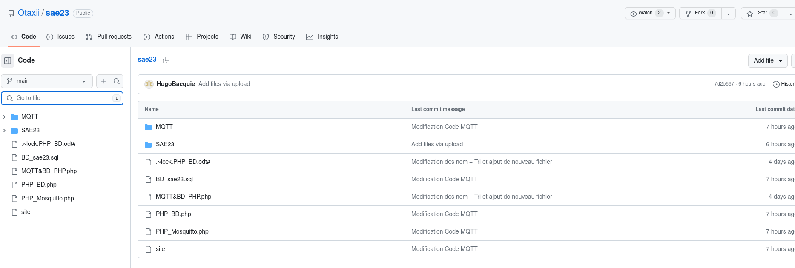

Nous avons utilisé 2 outils collaboratifs lors de cet Saé23
GitHub :
Drive google :
Au cours de ce projet, j'ai été responsable du développement de la partie du site web dynamique. J'ai rencontré quelques difficultés lors de la récupération des données à partir de la base de données, ainsi que lors de la création des sessions où j'ai éprouvé des problèmes de connexion à la base de données. Cependant, j'ai pu résoudre ces problèmes en vérifiant attentivement la syntaxe et les paramètres de connexion à la base de données, ce qui m'a permis de récupérer les données nécessaires et de créer des sessions fonctionnelles. Cette expérience m'a permis de renforcer mes compétences en développement web et de mieux comprendre le processus de récupération et de manipulation des données à partir d'une base de données dans un environnement web.
Pendant cet SAE, je me suis occupé de la création et de la gestion de la base de données. Cela consistait à créer et configurer des tables et des colonnes correspondant aux données du cahier des charges, ainsi qu'à gérer ces différents éléments. Les données étaient récupérées directement depuis un broker MQTT et envoyées sur le site pour afficher les résultats. Pour ce travail, j'ai rencontré différents problèmes. Le problème principal était la corruption de 3 machines virtuelles, dont la cause n'a toujours pas été trouvée. Ensuite, au niveau de la base de données, il y avait différents problèmes avec les clés étrangères, un mélange entre les tables. J'ai donc tout refait proprement et la table fonctionne très bien à présent. Il y a aussi eu un problème avec le serveur XAMPP qui refusait de démarrer à cause d'Apache qui était déjà activé pour une autre tâche. Nous avons donc utilisé la commande 'systemctl stop apache2' pour arrêter Apache, puis nous avons redémarré le serveur. Afin d'automatiser tout cela, j'ai créé un fichier qui permet d'arrêter Apache, de lancer le serveur, ainsi que tous les codes MQTT automatiquement. Selon moi, j'ai réussi à remplir le cahier des charges dans sa globalité. Il aurait peut-être été nécessaire d'ajouter plusieurs colonnes pour pouvoir trier un peu mieux mes valeurs, mais cela n'était pas demandé et avec tous les problèmes et les autres travaux sur les SAE, je n'ai pas forcément eu le temps.
Au cours de ce projet, j'ai réalisé un travail précis en mettant en place une architecture complète basée sur des conteneurs Docker pour gérer les données de capteurs. J'ai configuré et interconnecté les différents composants tels que InfluxDB pour le stockage des données de série temporelle, Node-RED pour la collecte et le traitement des données, et Grafana pour la visualisation des données. Lors de la mise en place de l'architecture, j'ai rencontré quelques problèmes, notamment dans la configuration des nœuds Node-RED et des requêtes InfluxDB. Ces problèmes ont été résolus en effectuant des recherches en ligne et en expérimentant différentes configurations. J'ai également rencontré une erreur liée à un conflit de types de champ lors de l'insertion de données dans InfluxDB, mais j'ai pu résoudre ce problème en ajustant la configuration du nœud change dans Node-RED pour convertir les valeurs au bon format. Dans l'ensemble, je suis satisfait du degré de réalisation du cahier des charges. J'ai réussi à mettre en place une architecture fonctionnelle pour la gestion des données de capteurs, avec des flux de données fluides de l'acquisition à la visualisation. Les différentes étapes du processus ont été implémentées avec succès, et les données de température, de CO2 et d'emplacement ont été stockées, traitées et affichées correctement.
Pendant cette SAE23, je me suis occupé de la partie récupération et envoi des données vers la base de données. Pour commencer, j'ai décidé de créer mes différents scripts en PHP, car ce langage me permettait non seulement d'effectuer la connexion et les requêtes dans la base de données, mais aussi d'utiliser le langage BASH grâce à la commande shell_exec(). PHP a été principalement utilisé pour tout ce qui était en rapport avec la base de données, tandis que BASH m'a surtout permis de récupérer les données envoyées par les différents capteurs et de les trier efficacement à l'aide de différentes commandes, comme "JQ" pour trier les données au format JSON et "TR" pour filtrer les caractères indésirables que je souhaitais supprimer afin d'assurer le bon fonctionnement de mes programmes. Pendant la création de tous ces programmes, j'ai rencontré plusieurs problèmes lors de la connexion à la base de données, que j'ai pu corriger grâce à mon camarade Nathan DUPONT. Les syntaxes des requêtes SQL n'étaient pas correctes, car il manquait quelques guillemets. J'ai également rencontré quelques difficultés pour le filtrage des données récupérées, mais j'ai réussi à les surmonter en me renseignant sur plusieurs sites (ex : JQplay pour la manipulation de JSON) et en regardant quelques vidéos sur YouTube.